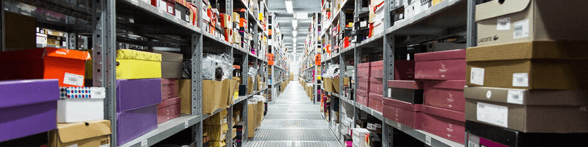

Маркировка обуви: сроки и схема работы, как подготовиться
12 декабря'19
С 1 марта 2020 года начнется обязательная маркировка обуви. Для подготовки к изменениям осталось всего три месяца - рассказываем, что нужно сделать и как работать дальше.
Закон о маркировке обуви
Постановление Правительства РФ от 05.07.2019 № 860 утверждает правила маркировки обувных товаров. Оно обязывает маркировать обувные товары средствами идентификации, а участников оборота отчитываться в систему мониторинга обо всех операциях с маркированной обувью. Чипирование обуви поможет отследить полный цикл движения товаров от производителя до покупателя и не пропустить контрафакт на рынок.
Сроки
- С 1 июля по 30 сентября 2019 года - регистрация участников оборота обувных товаров. Если ранее не продавали обувь, то зарегистрироваться нужно в течение 7 календарных дней со дня осуществления деятельности.
- С 31 октября 2019 года по 1 марта 2020 года - маркировка остатков, добровольная передача сведений в систему мониторинга.
- С 1 марта 2020 года - запрещен оборот немаркированной обуви.
- До 1 апреля 2020 года - маркировка остатков, приобретенных до 1 марта 2020 года, но полученных после 1 марта 2020 года.
Схема работы

1. Производитель получает коды в системе маркировки и наносит их на каждую коробку с обувью.
2. При отгрузке производитель отправляет дистрибьютору по ЭДО универсальный передаточный документ (УПД) с указанием всех кодов с коробок.
3. Дистрибьютор при приемке сверяет коды, указанные в документе и на упаковках, утверждает УПД и передает данные в систему маркировки через оператора ЭДО.
4. Оформление отгрузки дистрибьютором и приемка в рознице проходят аналогично.
5. При продаже кассир сканирует код маркировки с коробки, оператор фискальных данных добавляет его в чек и отправляет в систему маркировки. Код выбывает из оборота.
За работу без маркировки — штраф и конфискация
С 1 марта 2020 года за хранение, перевозку или покупку для продажи обуви без кодов Data Matrix будут штрафы. При этом обувь конфискуют.
Физическому лицу
2 000 — 4 000 ₽
Должностному лицу
5 000 — 10 000 ₽
Компании
50 000 — 300 000 ₽
Какая обувь не маркируется?
Согласно постановлению Правительства №860 от 5.07.2019 не маркируется:
― обувь на временном хранении;
― образцы не для продажи;
― для официального использования;
― взысканная или конфискованная;
― ввозимая в РФ «физиками» для личного пользования;
― при производстве на вывоз на территории Евразийского экономического союза;
― при таможенном транзите;
― при продаже в duty free.
Какая обувь подлежит маркировке?
В распоряжении правительства РФ № 792-р от 28 апреля 2018 года приводится список кодов обувных товаров, подлежащих маркировке. В него вошли все коды обувной номенклатуры, поэтому маркировка касается всех видов обуви. Да, и даже домашних тапочек со шлепанцами.
| Вид продукции | ОКПД 2 |
|---|---|
| Обувь водонепроницаемая на подошве и с верхом из резины или пластмассы | 15.20.11 |
| Обувь на подошве и с верхом из резины или пластмассы | 15.20.12 |
| Обувь с верхом из кожи | 15.20.13 |
| Обувь с верхом из текстильных материалов | 15.20.14 |
| Обувь для тенниса, баскетбола, тренировочная обувь и аналогичные изделия | 15.20.21 |
| Обувь спортивная прочая | 15.20.29 |
| Обувь с защитным металлическим подноском | 15.20.31 |
| Обувь различная специальная | 15.20.32 |
| Обувь лыжная | 32.30.12 |
Группы по ОКПД2 дополнительно уточняются кодами по ТН ВЭД.
64 01. Водонепроницаемая обувь с подошвой и с верхом из резины или пластмассы, верх которой не крепится к подошве и не соединяется с ней ни ниточным, ни шпилечным, ни гвоздевым, ни винтовым, ни заклепочным, ни каким-либо другим аналогичным способом.
64 02. Прочая обувь с подошвой и с верхом из резины или пластмассы.
64 03. Обувь с подошвой из резины, пластмассы, натуральной или композиционной кожи и с верхом из натуральной кожи.
64 04. Обувь с подошвой из резины, пластмассы, натуральной или композиционной кожи и с верхом из текстильных материалов.
64 05. Обувь прочая.
Код маркировки: что это и как выглядит?
Каждую пару обуви маркируют уникальным двумерным Data Matrix кодом, его наносят на коробку, ярлык или прямо на товар.
В нем содержится:
- Код товара (14 символов) — GTIN (Global Trade Item Number) — международный код и учёта.
- Индивидуальный серийный номер (13 символов), генерируется оператором системы.
- Ключ проверки (4 символа).
- Код проверки (88 символов).
Минимальный размер кода — 22 х 22 мм с разрешением 200 dpi. Средний размер 25 на 25 мм.
Что нужно сделать, чтобы работать с маркировкой?
Научиться принимать маркированную обувь: подключиться к ЭДО и маркировке, приобрести оборудование для сканирования марок
Научиться продавать маркированную обувь:
- для опта: подключить ЭДО для отправки документов
- для розницы: обновить прошивку кассы, подключиться к ОФД, поставить 2D-сканер на место кассира
Как зарегистрироваться в системе маркировки?
Для регистрации нужна усиленная квалифицированная электронная подпись на носителе Рутокен.
Установите необходимое ПО:
- операционная система Windows 7 / Mac OS X 10.8 или новее
- браузер Google Chrome, Mozilla Firefox, Opera, Internet Explorer 11, Safari
- плагин КриптоПро,Рутокен или VipNet
- сертифицированное СКЗИ
Перейдите по ссылке из письма и укажите:
- являетесь ли вы производителем или импортером товаров
- оператора ЭДО и ID участника ЭДО
- являетесь ли вы членом ассоциации «GS1 Рус». Если да, введите идентификаторы GSP и GLN.
Маркировка остатков
Вам понадобится принтер этикеток. Выберите подходящий в нашем каталоге.
Как промаркировать
До 1 марта нужно промаркировать все остатки обуви. Коды для этого предоставляют бесплатно. Рознице и дистрибьюторам доступна «упрощенная» процедура по инструкции.
Кратко опишем процесс:
Авторизоваться в личном кабинете Честного знака с помощью ЭП
Описать товары. По каждому виду обуви указываем:
- ИНН
- вид обуви: Мужская/ Женская/ Детская/ Унисекс
- где произведено: в РФ/ ввезен в РФ
- первые два знака кода товарной номенклатуры — 64
После описания вы получите общий код (GTIN).
Заказать коды.
Дальше вам нужно посчитать, сколько пар такой обуви у вас в наличии, и указать нужное число в личном кабинете на Честном знаке – столько кодов вам сгенерирует оператор маркировки. Вы получите итоговый файл с Date Matrix кодами.
Напечатать и наклеить этикетки с кодами. Выгрузите итоговый файл и распечатайте коды на принтере этикеток.
Приемка маркированной обуви
Что понадобится
Подключение к ЭДО. Если вы только принимаете УПД, то вам достаточно подключить аккаунт СБИС за 500 рублей – все входящие документы будут бесплатно.
Подключение к системе маркировки, чтобы отправлять туда коды.
Оборудование для сканирования марок на кассе и складе.
Как принимать
Вы получите от поставщика электронный УПД с кодами по ЭДО. Чтобы сверить марки из накладной с полученными по факту, отсканируйте все коды с коробок. Если все хорошо, подтвердите УПД, если есть расхождения – оформите возврат поставщику. Если хотите, можете сразу подтвердить получение без проверки.
Оборудование для ввода и проверки марок
Приложение на ваш смартфон
Бесплатно
Бесплатно
Для небольших складов
Просто установите на него приложение СБИС на складе.
+ приложение бесплатное
+ работает без привязки к компьютеру
+ сразу видно результаты проверки
- небольшая скорость сканирования
- неударопрочный

2D-cканерот 4100 ₽
Для средних складов
+ высокая скорость сканирования
+ точное сканирование
- работа только с компьютером
- ограниченная дальность действия
- неударопрочный
Терминал сбора данныхот 25 000 ₽
Для больших складов
+ ударопрочный
+ наглядный
+ работает без привязки к компьютеру
+ высокая скорость сканирования
+ точное сканирование

Оптовая продажа маркированной обуви
Что понадобится
Подключить ЭДО для обмена документами с контрагентами.
Если входящие УПД бесплатные, то, чтобы отправлять накладные, нужно купить пакет документов.
Как отгружать
При отгрузке оптовики отправляют по ЭДО УПД с указанием кодов, а СБИС проверяет, все ли правильно, и отправляет данные в систему маркировки.
Розничная продажа маркированной обуви
Что понадобится
Обновить прошивку онлайн-кассы, чтобы добавлять код маркировки в чек.
Проверьте вашу кассу по инструкции. Обновить ПО можно у производителей и в авторизованных сервисных центрах. «Тензор» имеет статус АСЦ — обращайтесь.
Подключить кассу к ОФД, который умеет передавать в чеке коды в систему маркировки.
2D-сканер для считывания марок.
Как продавать
Продавать маркированную обувь нужно через онлайн-кассу с ОФД: кассир сканирует код с упаковки, товар добавляется в чек, а оператор фискальных данных отправляет его в систему маркировки.
Частые вопросы
Что делать, если касса не подключена к ОФД (автономный режим)?
Розничный магазин может сам передавать сведения о выводе товара из оборота, но не позднее 30 дней со дня продажи:
1. Получите архив из фискального накопителя
2. Зайдите с ЭП в личный кабинет Честного знака
3. По кнопке «Выбытие» выберите файл и прикрепите его
4. Честный знак проверит его и спишет с вас проданные коды маркировки
Можно ли продавцам обуви работать на ЕНВД и патенте?
Нет. По 325-ФЗ розничные продавцы лекарств, обуви, одежды и изделий из меха не могут применять спецрежимы. Но можно применять упрощенную систему налогообложения.
Как перейти на УСН
До 31 декабря 2019 года:
1. Подайте в ФНС заявление о прекращение деятельности по ЕНВД
2. Подайте в ФНС заявление о переходе на УСН
3. Перенастройте кассу, чтобы она правильно указывала в чеке систему налогообложения
4. Настройте учет, чтобы правильно рассчитывалась ставка налога
Как оформить возврат маркированной обуви?
Перезапросите код в Честном знаке, получите новый, нанесите на обувь и введите в оборот.
Как вести учет остатков?
Пока за пересортом марок (когда в системе есть код, а у вас на балансе его нет, или наоборот) Честный знак следить не будет. После 1 марта вы обязаны принимать на баланс и продавать только товары с кодами маркировки. Когда требование появится, СБИС Маркировка поможет его выполнить.